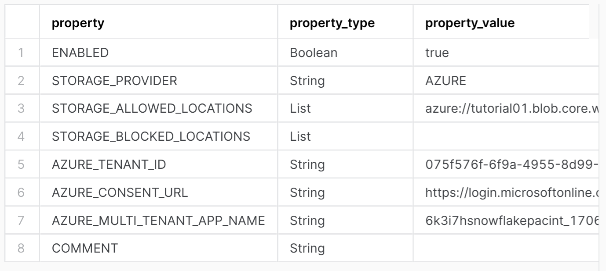
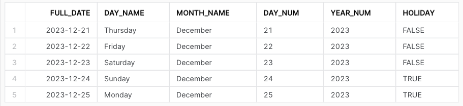

This tutorial shows you how to load data from cloud storage into Snowflake using SQL.
You use a template worksheet in Snowsight to complete these tasks.
You can choose which cloud provider you want to use: Amazon S3, Microsoft Azure, or
Google Cloud Storage (GCS). The worksheet contains customized SQL commands for
compatibility with each type of storage.
Attention
The example provided in this tutorial is specific to Microsoft Azure and shows SQL commands
that work for loading data from an Azure container.
Note
Snowflake bills a minimal amount for the on-disk storage used for the sample data in
this tutorial. The tutorial provides steps to drop the database and minimize storage
cost.
Snowflake requires a virtual warehouse to load the
data and execute queries. A running virtual warehouse consumes Snowflake credits.
In this tutorial, you will be using a 30-day trial account,
which provides free credits, so you won’t incur any costs.
Provide your account identifier or account URL.
If you’ve previously signed in to Snowsight, you might see an account name that you can select.
Sign in using your Snowflake account credentials.
Step 2. Open the Load data from cloud storage worksheet¶
You can use worksheets to write and run SQL commands on your database. Your trial
account has access to a template worksheet for this tutorial. The worksheet has the SQL
commands that you will run to create database objects, load data, and query the
data. Because it is a template worksheet, you will be invited to enter your own values
for certain SQL parameters. For more information about worksheets,
see Getting started with worksheets.
The worksheet for this tutorial is not pre-loaded into the trial account. To open
the worksheet for this tutorial, follow these steps:
If you are signing in to your Snowsight trial account for the first time,
select Start under Load data into Snowflake on the
Where do you want to start? screen.
If you have left the Where do you want to start? screen, go to the
Worksheets tab and select Continue in the banner.
Click anywhere in the middle panel named Load data from cloud storage.
The [Template] Load data from cloud storage worksheet opens, and your browser
looks similar to the following image.
The role you use determines the privileges you have. In this tutorial, use the
ACCOUNTADMIN system role so that you can view and manage objects in your account.
For more information, see Using the ACCOUNTADMIN Role.
A warehouse provides the compute resources that you need to execute DML operations, load data,
and run queries. These resources include CPU, memory, and temporary storage. Your
trial account has a virtual warehouse (compute_wh) that you can use for this
tutorial. For more information, see Virtual warehouses.
To set the role and warehouse to use, do the following:
In the open worksheet, place your cursor in the USE ROLE line.
USEROLEaccountadmin;
Copy
In the upper-right corner of the worksheet, select Run.
Note
In this tutorial, run SQL statements one at a time. Do not select Run All.
Place your cursor in the USE WAREHOUSE line, then select Run.
A database is a repository for your data. The data is stored in tables that you can
manage and query. A schema is a logical grouping of database objects, such as tables
and views. For example, a schema might contain the database objects required for a
specific application. For more information, see Databases, Tables and Views - Overview.
To create a database, a schema, and a table that you can load, do the following:
In the open worksheet, place your cursor in the CREATE OR REPLACE DATABASE line,
enter a name for your database and an optional comment, then select Run. For
example:
CREATEORREPLACEDATABASEcloud_data_dbCOMMENT='Database for loading cloud data';
Copy
Place your cursor in the CREATE OR REPLACE SCHEMA line, enter a name for your schema
and an optional comment, then select Run. For example:
CREATEORREPLACESCHEMAcloud_data_db.azure_dataCOMMENT='Schema for tables loaded from Azure';
Copy
Place your cursor in the CREATE OR REPLACE TABLE lines, complete the table
definition, add an optional comment, and select Run. For example, the following
table contains six columns:
CREATEORREPLACETABLEcloud_data_db.azure_data.calendar(full_dateDATE,day_nameVARCHAR(10),month_nameVARCHAR(10),day_numberVARCHAR(2),full_yearVARCHAR(4),holidayBOOLEAN)COMMENT='Table to be loaded from Azure calendar data file';
Copy
To confirm that the table was created successfully, place your cursor in the SELECT line,
then select Run.
SELECT*FROMcloud_data_db.azure_data.calendar;
Copy
The output shows the columns of the table you created. Currently, the
table does not have any rows.
Before you can load data from cloud storage, you must configure a storage integration that is
specific to your cloud provider. The following example is specific to Microsoft Azure storage.
Storage integrations are named, first-class Snowflake objects that avoid the need for passing explicit
cloud provider credentials such as secret keys or access tokens. Integration objects store an Azure
identity and access management (IAM) user ID called the app registration.
To create a storage integration for Azure, do the following:
In the open worksheet, place your cursor in the CREATE OR REPLACE STORAGE INTEGRATION lines, define
the required parameters, and select Run. For example:
Set AZURE_TENANT_ID to the Office 365 tenant ID for the storage account that contains the allowed storage
locations that you want to use. You can find this ID in the Azure portal under
Microsoft Entra ID > Properties > Tenant ID. (Microsoft Entra ID is the new name for Azure Active
Directory.)
Set STORAGE_ALLOWED_LOCATIONS to the path for the Azure container where your source data file is stored.
Use the format shown in this example, where tutorial99 is the storage account name and snow-tutorial-container is the container name.
Place your cursor in the DESCRIBE INTEGRATION line, specify the name of the storage
integration you created, and select Run.
DESCRIBEINTEGRATIONazure_data_integration;
Copy
This command retrieves the AZURE_CONSENT_URL and AZURE_MULTI_TENANT_APP_NAME for the client application
that was created automatically for your Snowflake account. You will use these values to configure
permissions for Snowflake in the Azure portal.
The output for this command looks similar to the following:

Place your cursor in the SHOW INTEGRATIONS line and select Run. This command returns
information about the storage integration you created.
SHOW INTEGRATIONS;
Copy
The output for this command looks similar to the following:
A stage is a location that holds data files to load into a Snowflake database. This tutorial creates
a stage that can load data from a specific type of cloud storage, such as an Azure container.
To create a stage, do the following:
In the open worksheet, place your cursor in the CREATE OR REPLACE STAGE lines, specify a name,
the storage integration you created, the bucket URL, and the correct file format, then select Run.
For example:
To load the data into the table, place your cursor in the COPY INTO lines, specify the table
name, the stage you created, and name of the file (or files) you want to load, then select Run.
For example:
Now that the data is loaded, you can run queries on the calendar table.
To run a query in the open worksheet, select the line or lines of the SELECT command,
and then select Run. For example, run the following query:
SELECT*FROMcloud_data_db.azure_data.calendar;
Copy
Your output looks similar to the following image.

Step 9. Cleanup, summary, and additional resources¶
Congratulations! You have successfully completed this tutorial for trial accounts.
Take a few minutes to review a short summary and the key points covered in the tutorial.
You might also want to consider cleaning up by dropping any objects you created in the tutorial.
For example, you might want to drop the table you created and loaded:
DROPTABLEcalendar;
Copy
As long as they are no longer needed, you can also drop the other objects you created, such as
the storage integration, stage, database, and schema. For details,
see DDL (Data Definition Language) Commands.
In summary, you used a pre-loaded template worksheet in Snowsight to complete the following steps:
Set the role and warehouse to use.
Create a database, schema, and table.
Create a storage integration and configure permissions on cloud storage.
Create a stage and load the data from the stage into the table.
Query the data.
Here are some key points to remember about loading and querying data:
You need the required permissions to create and manage objects in your account. In this tutorial,
you use the ACCOUNTADMIN system role for these privileges.
This role is not normally used to create objects. Instead, we recommend creating a hierarchy of
roles aligned with business functions in your organization. For more information, see
Using the ACCOUNTADMIN Role.
You need a warehouse for the resources required to create and manage objects and run SQL commands.
This tutorial uses the compute_wh warehouse included with your trial account.
You created a database to store the data and a schema to group the database objects logically.
You created a storage integration and a stage to load data from a CSV file stored in an Azure container.
After the data was loaded into your database, you queried it using a SELECT statement.